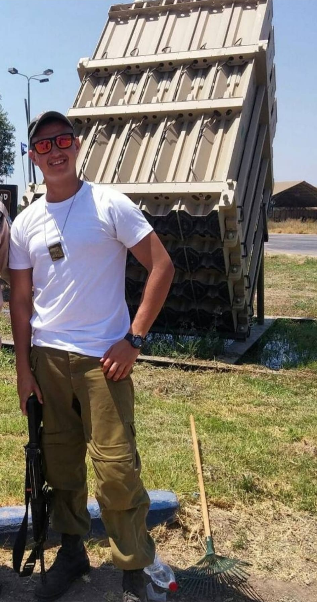
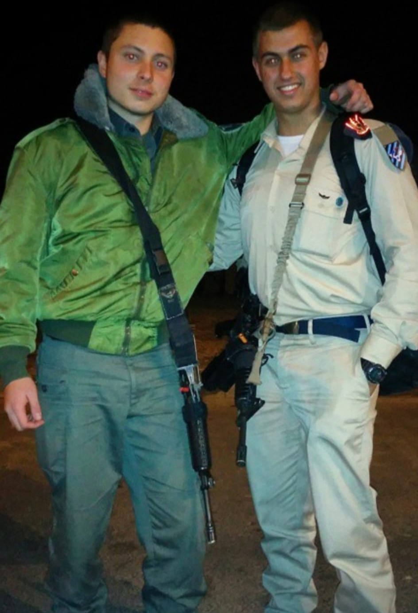

 
At the first year of service I was in whole israel, sometimes at the Negev Deserts and sometimes in the north. After that I moved to a permanent base called Air Defence School, there I served the other two years till the end of my service.